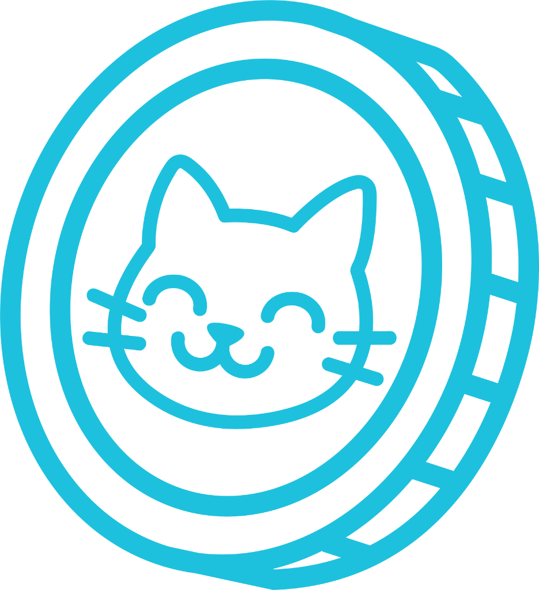
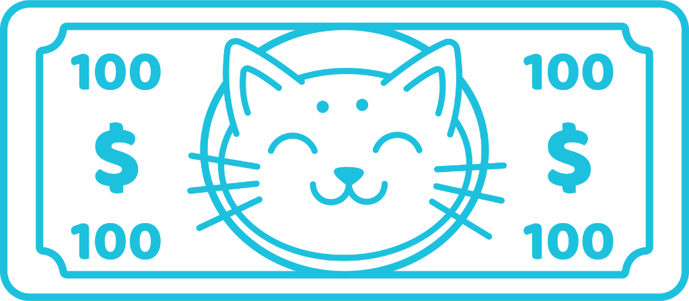
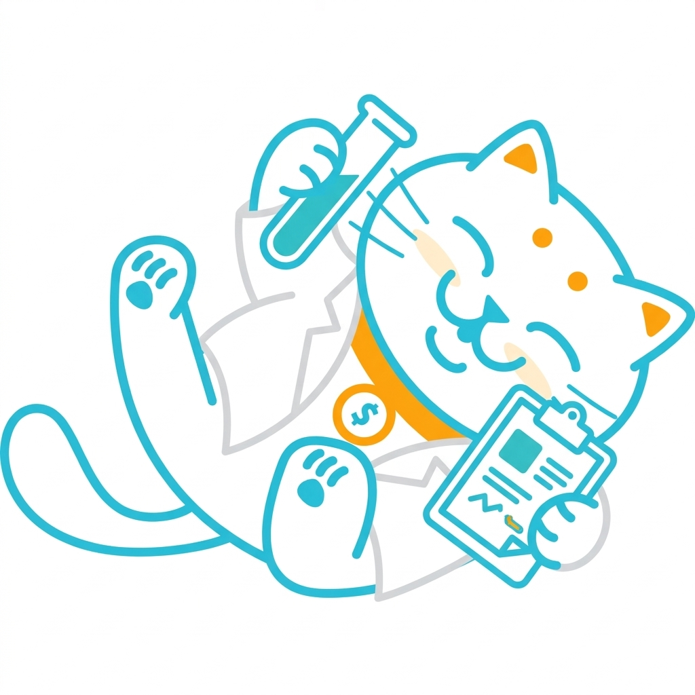

Tu Check-up Financiero
Así como te haces estudios de laboratorio para cuidar tu cuerpo, este es el diagnóstico exacto de tus "signos vitales" financieros para prevenir problemas y definir un plan de mejora.
Realizar mi diagnóstico
La Metodología: El Semáforo Financiero
Nuestra herramienta de diagnóstico clasifica tus indicadores clave en 3 estados de salud, dándote total claridad visual sobre lo que debes atender de urgencia y lo que va por buen camino.
Verde: Saludable
Variables vitales en perfecto estado. Tienes capacidad de ahorro, liquidez y tu deuda está bajo control.
Amarillo: Precaución
Algunos valores están alterados. Necesitamos aplicar ajustes preventivos antes de que se vuelvan un problema crónico.
Rojo: Alerta
Tus finanzas están en cuidados intensivos. Requieren intervención inmediata para detener fugas y sanar deudas.
La Química de tus Finanzas
Analizamos a fondo las 4 dimensiones de tu salud financiera para tener una radiografía completa de tu situación actual y saber exactamente dónde aplicar la medicina.
1. Control del día a día
Evaluamos tu capacidad para gestionar ingresos y gastos cotidianos. Asegurando que vives dentro de tus posibilidades y mantienes un presupuesto sin sobresaltos.
2. Resiliencia Financiera
Medimos tu habilidad para enfrentar imprevistos. Revisamos tu fondo de emergencia y nivel de protección para absorber impactos sin recurrir a deudas.
3. Metas y Seguridad Futura
Revisamos tu proyección a largo plazo. Evaluamos tus hábitos de ahorro e inversión enfocados en construir patrimonio y alcanzar tus objetivos de vida.
4. Libertad Financiera
Analizamos tu nivel de endeudamiento y flexibilidad para tomar decisiones que te permitan disfrutar de la vida y planificar sin la presión de la escasez.
Cómo funciona el checkup
Paso 1: La "Toma de Muestra"
Utilizarás nuestra herramienta exclusiva en línea para ingresar tus datos financieros y procesar tus variables vitales.
Paso 2: Interpretación Clínica
Tendremos una sesión de análisis 1 a 1 en vivo donde te explicaré a detalle qué significa cada número en tu semáforo y dónde están los bloqueos.
Paso 3: Tu Receta de Accionables
No te vas con las manos vacías. Al finalizar, definiremos estrategias claras, específicas y paso a paso para que empieces a mejorar tu salud financiera el mismo día.
Inversión del Check-up
Incluye la toma de muestra con la herramienta y tu sesión 1 a 1 de diagnóstico.
Agenda tu consulta de evaluación
A veces todo lo que necesitas es alguien que lea los resultados contigo y te diga exactamente qué medicina tomar. Descubre cómo están tus finanzas y pon manos a la obra.
Agendar Check-up Ahora